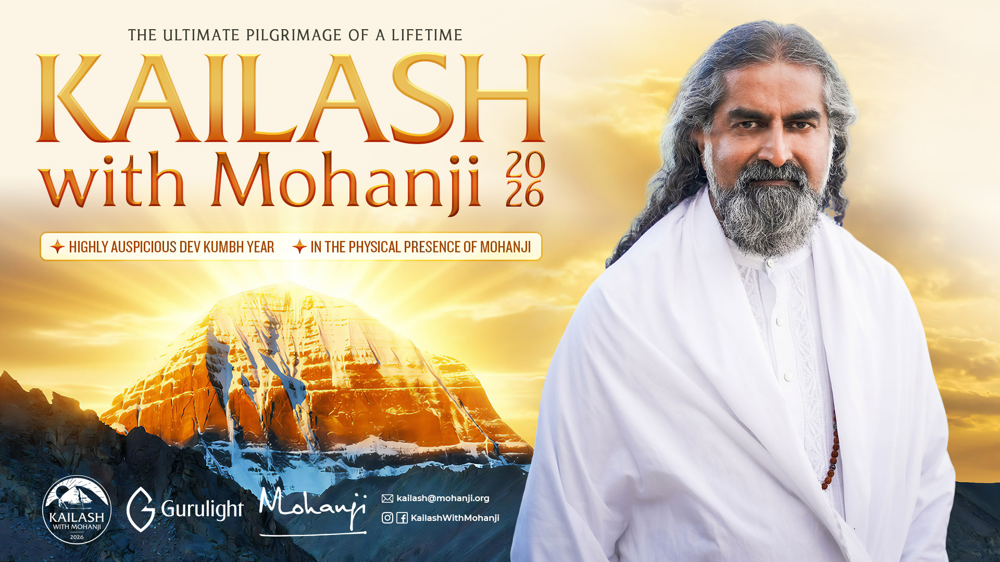
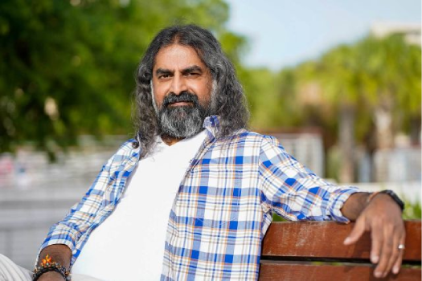

The Journey Of A Lifetime — a pilgrimage not to a mountain, but to the stillness at the centre of your own being.
Kailash does not receive visitors. Kailash receives those whom it has silently called. The call may come as a dream, a restlessness, a tear you cannot explain. When it arrives, the body simply begins to move toward the mountain — and what was seeking you now begins to reveal itself.
This is not a trek. This is not a tour. This is a slow, deliberate dissolution of the self you thought you were, at the feet of the mountain that has always been your home.

For Hindus, Kailash is the axis of the universe — the throne of Shiva, consciousness itself in still, unmoving form. For Buddhists, it is the abode of Demchok. For Jains, it is where Rishabhanatha attained liberation. For Bön practitioners, it is the seat of spiritual power.
But the mountain belongs to no religion. It is older than any of them. It simply is — an unbroken, unclimbed, unapproachable transmission of the formless taking form, so that the form-bound pilgrim may remember what they truly are.
To walk around this mountain — the Parikrama — is to walk around the Sahasrara of the planet. An outer circle that slowly, inevitably, closes into an inner one.
Ordinary yatras open the heart. Dev Kumbh yatras open the cosmos. The alignment that arrives once in a generation is not a story — it is a force, and those who are present for it receive transmissions that would ordinarily take lifetimes to earn.
This is why Mohanji has chosen 2026. This is why the group is small. This is why we move slowly.
Not four activities. Four thresholds — each dissolving a different layer of who you thought you were before you arrived.
52 kilometres across three days. Darchen to Dirapuk beneath the north face, over the 5,645 m Drolma La, down to Zuthulpuk and back. A full circumambulation of the mountain is said to erase the karma of a single lifetime.
Born from the mind of Brahma. A pre-dawn bath at 4,590 m beside the highest freshwater lake on Earth. Fire ceremony at the southern shore. Mohanji's transmission at the water's edge. A day held entirely outside time.
The rarely visited face where Jain tradition places the moksha of Rishabhanatha. Private access arranged only for Mohanji's yatra. Silent darshan at sundown — the sheerest, most arresting view of Kailash most pilgrims never see.
Morning meditation. Evening satsang. The daily presence of Mohanji walking at the pace of the slowest yatri. And a closing shaktipat transmission on the final night. The outer mountain is the method — this is the medicine.

Kailash is not a mountain that you go to see. Kailash is a mountain that comes to see you. Every step you take around it is a step it has already taken inside you long before you boarded the flight. By the time you return, you will not remember a single photograph — but something in you will never again be the same.
Every day is paced for altitude, reflection, and presence. Mohanji travels with the group from day one to day fifteen.
We hold every detail — permits, oxygen, meals, ponies, medical — so the only thing you have to carry is your intention.
A few voices from the 2018, 2022 and 2024 yatras Mohanji has led.
Every tier includes the full 15-day programme and Mohanji's daily presence. The tiers differ in accommodation comfort and inner-circle access.
Registration closes 31 March 2026, or when the 48 places are taken — whichever comes first.